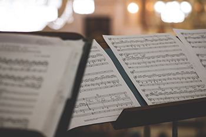

Mission

The West Virginia Youth Symphony (WVYS)
seeks to provide the opportunity for individual
growth of musically talented and motivated youth
through the training and performance of the highest possible quality of orchestral and chamber music
literature. The WVYS endeavors to develop pride
and self-esteem in young people from all cultural backgrounds through their individual musical
achievement and to instill values, discipline and
learning abilities that will benefit them throughout their lives. The WVYS aspires to perpetuate support of professional classical music by enriching local
culture and to increase the awareness of and
participation in such music in underserved
communities.
Our History
The West Virginia Youth Symphony
originated in 1949 when the Charleston
Woman's Club organized the Kanawha
Valley Youth Orchestra. It has operated
continuously since then, becoming
incorporated in 1968 as the Charleston
Symphony Youth Orchestra and changing
its name in 1991 to the West Virginia Youth
Symphony. While the name has changed,
the goal has remained the same - to
provide opportunities for young people
to perform in an orchestra setting.
Each year, about 125 young musicians
participate, making it both the largest
and the oldest youth orchestra in the
state. Students come from as far away
as Ohio to rehearse weekly in Charleston.
Ages range from 7 to 20, and students
from 36 public and private schools, plus
college and home-school, are making
music together each week.
Goals
- Bring together the finest young musicians in the area to
rehearse and performs together under inspiring leadership. - Enable students to experience elements of a professional
environment including competition, responsibility and
concert hall performance. - Develop performers and audiences for the future.
- Offer students opportunities to broaden their repertoire
by playing music of varied and differing styles. - Inspire other student’s interest in music as performers
or listeners. - Enrich and encourage local school music programs.
The Program
The West Virginia Youth Symphony is a non-profit
arts organization that supports five music ensembles
and various chamber groups:
- The full Youth Orchestra for advanced student musicians
approximate ages 13-22 - The Wind Ensemble comprised of the brass and woodwind
sections of the Youth Orchestra - The Youth Strings ensemble for intermediate level string
students through grade 12 - The Youth Winds ensemble for beginning to intermediate
brass & woodwind musicians to introduce the concepts
of orchestral music - The Cadet Strings for beginning level string students

Members of all the groups come from schools
and colleges throughout West Virginia and
surrounding states.
The program includes rehearsals, sectionals,
ensemble playing and concerts held September
through June. Master classes, field trips, run-out
concerts and other special events may be included
as funding permits. Students are presented challenging
music to encourage musical growth and to provide
a stimulating learning experience.